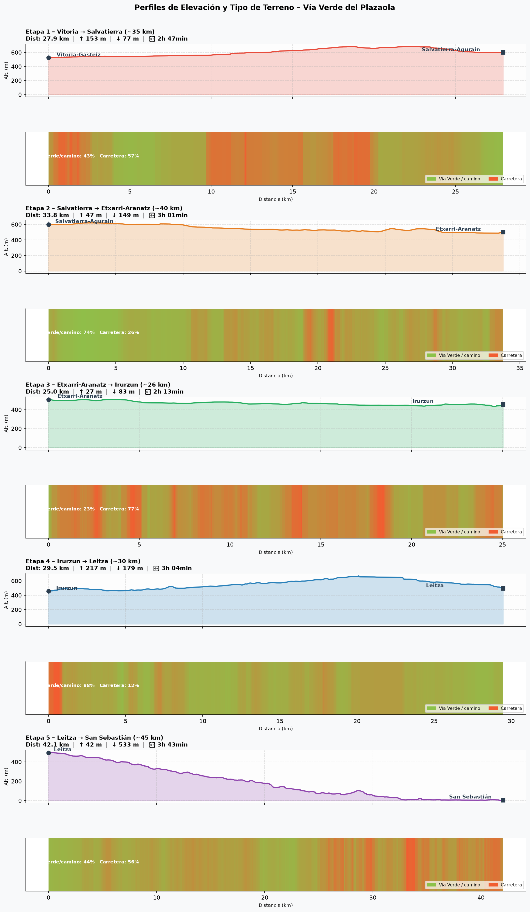
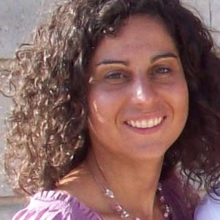
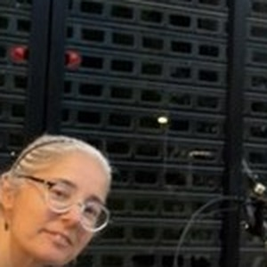
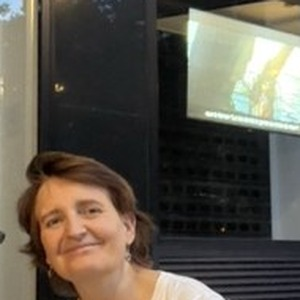
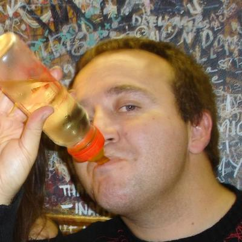
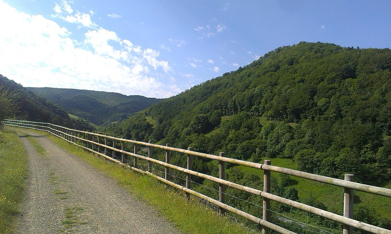
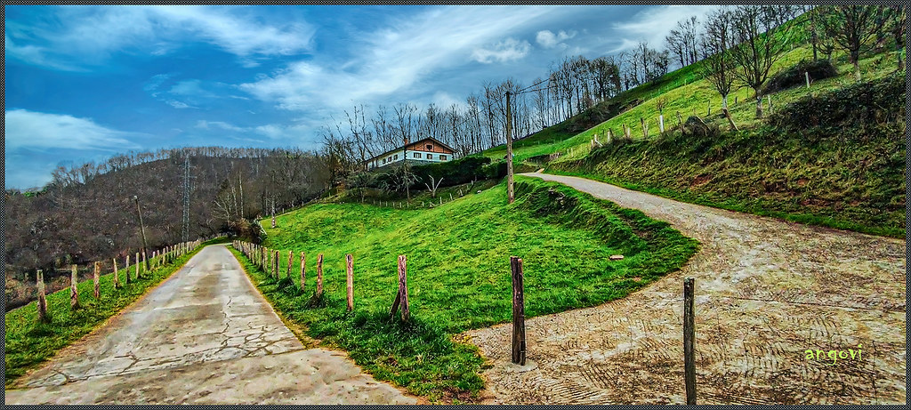

Vía Verde del Plazaola · Julio 2026
El camino
La Vía Verde del Plazaola recorre el trazado del antiguo ferrocarril minero que unía Pamplona con San Sebastián, atravesando el Parque Natural de Aralar, el valle del Leizarán y frondosos bosques vascos.
Una ruta de 158 km en 5 etapas por el País Vasco y Navarra, desde la llanada alavesa hasta la costa cantábrica. Poca pendiente, mucho verde y final con vistas al mar.
Desnivel etapa a etapa

Etapa 4 (Irurzun → Leitza) es la más exigente con el túnel de Huici (↓ ↑3 km) · Etapa 5 es el gran descenso final hacia San Sebastián (↓3 km).
Día a día
Vitoria-Gasteiz → Salvatierra
Etapa de inauguración por la llanada alavesa. Salida tranquila desde Vitoria hasta la medieval Salvatierra.
| Km | Lugar | Qué hacer |
|---|---|---|
| Km 4 | Argañdoña | Desvio +1 km. Pueblo medieval, torre de los Villela (s. XV). 15 min |
| Km 11 | La Llanada | Vistas 360° sobre la llanura cerealista y la Sierra de Entzia. Foto 5 min |
| Km 19 ⭐ | Araya | Bar bocadillo (dom: confirmar apertura). Fuente en la plaza. Agua |
| Km 27 | Entrada Salvatierra | Muralla medieval en el horizonte. Entrar por la Puerta de Santa María |
Salvatierra → Etxarri-Aranatz
La etapa más larga en distancia. Descenso suave hacia Navarra atravesando pequeños pueblos.
| Km | Lugar | Qué hacer |
|---|---|---|
| Km 15 ⭐ | Límite Álava/Navarra | Foto obligatoria. Sierra de Urbasa a la derecha (~1.000 m) |
| Km 20 ⭐ | Alsasua | Almuerzo ideal a mitad de etapa. Supermercado, farmacia, bares. 30-40 min |
| Km 27 | Olazagutia | Vistas Sierra de Aralar al norte. Santuario San Miguel in Excelsis (s. XII) |
Etxarri-Aranatz → Irurzun
La etapa más corta. Día tranquilo para visitar el parque natural de Aralar y disfrutar sin prisas.
| Km | Lugar | Qué hacer |
|---|---|---|
| Km 5 | Arbizu | Bar y fuente en la plaza. El río Araquil aparece |
| Km 10 ⭐ | Viaducto de Goldaratz | Arco de piedra del ferrocarril sobre el río Araquil. Verlo desde abajo. 10 min |
| Km 14 | Lacunza | Fuente junto a la ermita |
| Km 18 | Irañeta | Mojón Camino Real “A Pamplona tres leguas”. Antiguo camino Pamplona–SS |
| Km 22 | Túneles de Ihabar | Primeros túneles cortos. Paso calizo de Dos Hermanas junto al río |
Irurzun → Leitza
La etapa más dura en desnivel. Bosques de hayas y el impresionante túnel de Huici (linterna obligatoria).
| Km | Lugar | Qué hacer |
|---|---|---|
| Km 5 ⭐ | Viaducto de Gulina | Arco de piedra ~40 m sobre el barranco. Parada obligatoria. 10 min |
| Km 9 ⭐ | Lekunberri | ⚠️ Último avituallamiento. Super, bares, farmacia. 20 min |
| Km 12 | Mugiro | Último caserío. El camino sube. Sin bares hasta km 22 |
| Km 17 🔦 | ENTRADA Túnal Huici | 2.700 m · ~12°C · suelo mojado · ENCENDER LINTERNAS |
| Km 19,7 ⭐ | SALIDA Túnal | ¡Estáis en Gipuzkoa! Foto del grupo en la boca del túnel |
| Km 25 | Desvío a Leitza | Giráis aquí: 5 km subida / ~200 m desnivel |
Leitza → San Sebastián 🏖️
El gran descenso final. Desde los hayedos de Leitza hasta el Cantábrico, pasando por el valle del Leizarán. ¡Pintxos y txakoli en la meta!
| Km | Lugar | Qué hacer |
|---|---|---|
| Km 5 | Vuelta a la Vía Verde | Señalización guipuzcoana. Río Leizarán a la derecha |
| Km 9 ⭐ | Tramo Leizarán | Valle estrecho, cascadas, helechos gigantes. El tramo más bonito. Sin cobertura |
| Km 13 ⚠️ | Tráfico mixto | Camiones madereros. Mantened la derecha y ceded el paso |
| Km 18 | Berástegi | Bar en el cruce. Parada para café. 10 min |
| Km 28 ⭐ | Andoaín | Fin oficial Vía Verde. Almuerzo recomendado antes del tramo urbano |
| Km 33 | Hernani | El carril bici del río Urumea comienza aquí |
| Km 37 ⭐ | Carril bici Urumea | La entrada más bonita posible a San Sebastián. ¡Meta! |
Dónde dormimos
El Gordo
📍 Salvatierra / Agurain
☕ Desayuno libre (bares en el pueblo)Hotel Aritzalko
📍 Etxarri-Aranatz · Navarra
✅ Desayuno incluidoHotel Plazaola ★★★
📍 Irurzun · Navarra
✅ Desayuno incluido (A/D)Leitzarooms
📍 Leitza · Navarra
⚠️ Desayuno: preguntar al reservarAmetzagana
📍 San Sebastián · Gipuzkoa
📞 Desayuno: reservar con antelaciónAmetzagana
📍 San Sebastián · día libre en la ciudad
📞 Desayuno: reservar con antelaciónDónde cenar cada noche
Pintxos y txikiteo en el casco antiguo. Ambiente local y vinos de Rioja Alavesa.
Cocina alavesa del día. Alubias, txuleta y bacalao a la alavesa.
⚠️ El restaurante puede no abrir el domingo noche. Confirmar al llegar.
El restaurante del propio hotel. Cena cómoda tras la etapa más larga, con productos locales de la Barranca navarra.
Ambiente familiar. Bar-restaurante con cocina del día accesible para ciclistas.
Cocina vasca tradicional en un caserío. Pochas navarras, cordero al chilindrón.
Pintxos y raciones, muy popular entre los locals. El mejor ambiente del pueblo.
El propio alojamiento tiene restaurante. Menú del día navarro, la opción más cómoda.
En Etxarren (5 min en bici). Cocina casera navarra, merece el pequeño desvío.
Alubias, ajoarriero y tarta de queso. Una de las mejores cocinas del pueblo.
Menú del día local. Relación calidad-precio muy buena para reponer fuerzas.
Bar de tapas y pintxos en el centro. El sitio donde se junta la gente del pueblo.
📍 Parte Vieja
Puerto. Mejillones, gambas y navajas de pie en la barra. El más económico. 10–20 €.
Clásico de la Parte Vieja. Pintxos tradicionales, barra concurrida y ambiente local.
El rey de las anchoas. Montaditos especializados en anchoa con toppings creativos.
📍 Gros
Barrio de Gros, menos turístico. Cocina vasca sentada, precios razonables.
Menú del día económico en Gros. Favorito de trabajadores del barrio. 12–15 €.
Ambiente 100 % local en Gros. Pintxos, sidra y conversación sin turistas.
Madrid ↔ Euskadi
Autobús ALSA
Sáb 25 jul · 16:00 h
Estación Sur de Madrid → Vitoria-Gasteiz
Autobús ALSA
Sáb 1 ago · 16:00 h
San Sebastián → Estación Sur de Madrid
No te olvides de...
Los protagonistas
Christine · Rocío · Mery · Paco




El paisaje que nos espera

